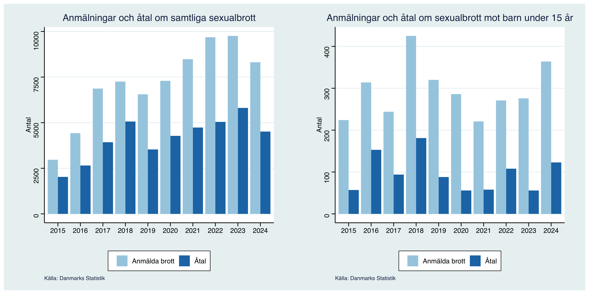
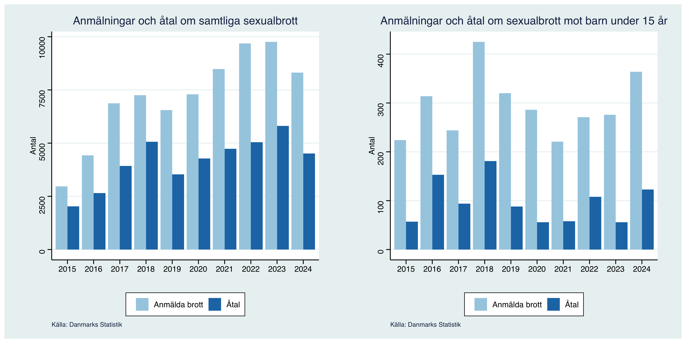

Under det senaste decenniet har dansk kriminalpolitik fått ett allt större genomslag i svensk politisk och medial diskurs. Särskilt i debatten om gängkriminalitet och trygghet lyfts Danmark återkommande fram som ett föregångsland – ett exempel på hur tydliga, strikta och konsekventa åtgärder kan skapa resultat. Bland de mest omtalade initiativen finns de hårda straff för gängbrott, utbyggnaden av restriktiva åtgärder såsom förlängd häktningstid, och den ökade användningen av elektronisk fotboja. Dessa åtgärder har ofta framhållits som framgångsrika verktyg i kampen mot organiserad brottslighet och har därmed inspirerat svenska politiker och debattörer att undersöka om en liknande politik skulle kunna ha positiva effekter även i Sverige.
Men vad ligger bakom detta intensiva intresse? Är det Danmarks upplevda effektivitet som lockar, eller är det snarare ett uttryck för en svensk längtan efter kontroll i en tid av samhällsförändring och ökad otrygghet? Och kanske viktigast av allt – har den danska modellen verkligen haft positiva effekter?
Denna rapport syftar till att nyanserat och evidensbaserat undersöka just detta: i vilken utsträckning har Danmarks kriminalpolitiska linje påverkat brottsutvecklingen, rättsväsendets funktion och samhällsklimatet? Genom att kombinera statistik, policyanalyser och aktuell forskning granskas den danska strategin – inte som idealbild, utan som föremål för kritisk analys. Särskild uppmärksamhet ägnas åt de specifika åtgärderna som Danmark genomfört, såsom tuffare strafflagstiftning, utökad användning av preventiv frihetsberövning och intensifierad gränskontroll, för att bedöma om dessa politiska val har lett till en verklig minskning av brottsligheten eller om de enbart har skapat ett illusion av ökad trygghet.
Danmark har uppvisat en övergripande nedgång i antalet anmälda brott, vilket ofta tillskrivs landets strikta kriminalpolitik. Enligt Danmarks Statistik minskade antalet anmälda brott med 17 procent mellan 2009 och 2019 (Newsoresund, 2023). Samtidigt har vissa brottstyper ökat. Antalet anmälningar om sexualbrott steg med 16 procent under 2019 jämfört med föregående år, där våldtäktsanmälningarna ökade med 88 procent (SvD, 2020). Forskare som utvärderat effekterna av sänkningen av straffmyndighetsåldern till 14 år 2010, följt av en återställning till 15 år 2012, noterar att ungdomsbrottsligheten ökade snarare än minskade under perioden med sänkt straffålder (SVT, 2013).
Inbrott har minskat kontinuerligt sedan 2009, med en nedgång på 36 procent i bostadsinbrott (Newsoresund, 2023). Dock indikerar statistik att invandrare från icke-västerländska länder är överrepresenterade i vissa brottstyper, vilket har lett till politiska diskussioner om invandringens påverkan på brottsligheten (Friatider, 2021).
Sammanfattningsvis visar Danmarks brottsstatistik en komplex bild där övergripande brottsnivåer minskar, men vissa brottstyper, särskilt bland ungdomar, har ökat. Dessa trender ger en nyanserad bild av effekterna av den danska kriminalpolitiken.

Gängrelaterad brottslighet har under det senaste decenniet blivit ett av de mest uppmärksammade problemen i Danmark. Trots de generella nedgångarna i brottsstatistik, har gängbrottsligheten, särskilt i storstadsområdena, fortsatt att vara en allvarlig utmaning. I synnerhet i Köpenhamn och de omgivande förorterna har gängstrider om narkotikahandel och territorier skapat en otrygg miljö för invånarna.
Den danska regeringens svar på detta har varit en rad repressiva åtgärder, inklusive tuffare lagstiftning och ökade resurser till polisen. År 2018 lanserade Danmark ett särskilt program för att bekämpa gängkriminalitet, vilket bland annat innefattade hårdare straff för gängmedlemmar och en ökad användning av elektroniska fotbojor för att övervaka individer med starka kopplingar till kriminella grupper. Dessutom genomförde polisen fler räder mot gängmedlemmar och beslag av illegala vapen, vilket bidrog till en minskning av antalet skjutningar och andra våldsbrott kopplade till gängkonflikter.
Trots dessa insatser kvarstår frågan om den danska gängkriminaliteten verkligen har minskat på lång sikt. Vissa forskare och kritiker hävdar att den repressiva politiken riskerar att driva gängmedlemmar längre in i det kriminella systemet, snarare än att förebygga att unga personer går med i gängen från första början. Enligt rapporter från det danska kriminalvården har antalet återfall i brott bland tidigare dömda gängmedlemmar varit högt, vilket ifrågasätter effekten av de straffrättsliga åtgärderna (Newsoresund, 2023).
Det finns också en oro för att gängkriminalitetens koppling till invandring och socio-ekonomiska faktorer inte alltid får tillräcklig uppmärksamhet i den offentliga debatten. Gängbildning i Danmark är ofta starkt förknippad med unga män från socio-ekonomiskt utsatta grupper, vilket har lett till politiska diskussioner om integration, utbildning och sysselsättning (SvD, 2020). Kritiker menar att fokus på straff och repression riskerar att förbises långsiktiga lösningar som adresserar de underliggande orsakerna till gängbrottsligheten.
Sammanfattningsvis är gängrelaterad brottslighet en komplex fråga i Danmark, där tuffa åtgärder blandas med kritik om effektiviteten och de långsiktiga konsekvenserna. Trots framgångar i att minska antalet skjutningar och våldsbrott, återstår frågan om den danska kriminalpolitikens metod är den mest hållbara lösningen på gängbrottsligheten.
I Danmark har brottsförebyggande åtgärder varit en central del av landets kriminalpolitik under det senaste decenniet. Medan det har skett en ökad fokusering på repressiva åtgärder, såsom hårdare straff och mer intensiv övervakning, har Danmark även implementerat flera förebyggande strategier för att minska brottsligheten på lång sikt. Dessa åtgärder syftar inte bara till att straffa gärningspersoner, utan också att förhindra att unga människor dras in i brottslighet och att stärka det sociala skyddsnätet för utsatta grupper.
En av de mest uppmärksammade förebyggande åtgärderna är den så kallade “Tryggare Danmark”-strategin, som lanserades 2017 av den danska regeringen. Strategin fokuserar på att förbättra samverkan mellan olika samhällsaktörer, såsom polisen, kommunerna, frivilligorganisationer och skolor, för att tidigt identifiera och ingripa mot ungdomar i riskzonen för kriminalitet. Programmet involverar bland annat mentorskap, fritidsaktiviteter och socialt stöd för unga människor, med särskilt fokus på att minska gängrekrytering och våldsbrott bland ungdomar. Genom att erbjuda alternativa vägar ut ur utsatta livssituationer har dessa program visat sig ha positiva effekter i att minska ungdomsbrottsligheten på kort sikt (SvD, 2020).
Vidare har Danmark investerat i flera förebyggande insatser för att hantera drogrelaterad brottslighet, vilket har varit ett växande problem i vissa förorter. I kölvattnet av den ökande narkotikahandeln har danska myndigheter infört program för skademinimering, som bland annat inkluderar sprutbyten och stöd för missbrukare. Dessa åtgärder syftar till att minska både den personliga och samhälleliga skadan av drogmissbruk, vilket indirekt påverkar den brottslighet som ofta är kopplad till narkotikahandel och missbruk.
Forskning har visat att en stark satsning på socialt arbete och tidiga interventioner kan bidra till att minska risken för att unga hamnar i kriminalitet. I vissa stadsdelar i Köpenhamn har exempelvis brottsligheten minskat med upp till 25 procent efter implementeringen av förebyggande insatser som omfattar allt från förbättrade skolgångsprogram till stöd för familjer i riskzonen (Newsoresund, 2023).
Dock kvarstår utmaningen i att få fler samhällsaktörer att engagera sig i dessa långsiktiga insatser och att säkerställa tillräckliga resurser för att nå alla de unga som riskerar att hamna i kriminalitet. Kritiker menar att den höga politiska fokusen på repressiva åtgärder har lett till en brist på långsiktiga satsningar på sociala program, vilket kan försvåra för en mer hållbar och effektiv brottsförebyggande politik.
Sammanfattningsvis visar Danmark ett dubbelspår i sin brottspolitik – medan tuffa straff och hårda åtgärder mot brottslingar har fått stort utrymme, har brottsförebyggande åtgärder också visat sig vara en viktig komponent för att minska kriminalitet på lång sikt. Det är dock fortfarande en pågående utmaning att balansera mellan repression och prevention för att uppnå bästa möjliga resultat.
Under de senaste åren har Sverige visat ett allt större intresse för att studera och tillämpa delar av den danska kriminalpolitiken, särskilt i relation till brottslighet kopplad till gängvåld och organiserad kriminalitet. Detta intresse har ökat i takt med den oroande utvecklingen av våldsbrott och gängkriminalitet i svenska storstäder, vilket har lett till en politisk debatt om effektivare åtgärder för att hantera dessa problem.
En av de mest framträdande danska metoderna som har väckt svenskt intresse är den strikta och repressiva approachen mot gängkriminalitet. Danmark har implementerat ett antal hårda åtgärder, som längre straff för gängbrott, utökad användning av elektroniska fotbojor och ett mer intensifierat polisarbete, där särskilda enheter arbetar direkt mot gängmedlemmar och deras nätverk. För Sveriges del, där gängrelaterad brottslighet har blivit ett av de mest prioriterade samhällsproblemen, har de danska åtgärderna sett ut som möjliga lösningar för att bryta den växande våldsspiral som har präglat delar av landet (SvD, 2020).
Det svenska intresset för Danmark går inte bara i linje med gängbrottslighet, utan även med landets mer generella fokus på säkerhet och brottsförebyggande arbete. Danska strategier för att förebygga ungdomsbrott har särskilt fångat det svenska intresset. Danmark har satsat på tidiga interventioner för att förhindra unga från att dras in i kriminalitet, särskilt genom samarbeten mellan polis, socialtjänst och frivilligorganisationer. Program som Tryggare Danmark och initiativ för att förbättra skolgång och socialt stöd för utsatta ungdomar har ofta nämnts som exempel som skulle kunna anpassas och implementeras även i Sverige för att hantera den växande problematiken med ungdomsbrottslighet och gängrekrytering (Newsoresund, 2023).
Samtidigt som intresset för de danska metoderna växer, har kritiker påpekat att det svenska samhällssystemet och de bakomliggande orsakerna till brott skiljer sig avsevärt från de danska förhållandena. Sveriges sociala och ekonomiska strukturer, invandringspolitik och integrering av utsatta grupper utgör olika utmaningar jämfört med Danmark. Det innebär att en direkt överföring av danska modeller inte nödvändigtvis skulle leda till samma resultat i Sverige. Därför pågår det en intensiv debatt om hur svenska politiker och beslutsfattare kan anpassa de danska metoderna, samtidigt som de beaktar de unika omständigheterna i Sverige.
Det är också viktigt att påpeka att det svenska intresset för Danmark inte endast handlar om att ta efter metoder utan även om att kritiskt granska de effekter som de danska åtgärderna har haft på brottsutvecklingen. Trots att vissa åtgärder har haft positiva resultat i form av minskad våldsbrottslighet och gängkonflikter, har det också funnits kritik mot de långsiktiga effekterna av en sådan repressiv strategi. Därför pågår det en kontinuerlig diskussion i Sverige om huruvida dessa metoder verkligen är hållbara på lång sikt eller om de riskerar att skapa andra problem, såsom ökad social utestängning och kriminalisering av unga (SvD, 2020).
Sammanfattningsvis kan Sveriges intresse för de danska kriminalpolitiska metoderna ses som ett försök att hitta lösningar på en växande brottslighetsproblematik. Samtidigt är det viktigt att Sverige reflekterar över de kulturella och samhälleliga skillnaderna mellan länderna och gör en noggrann bedömning av vilka delar av den danska modellen som är anpassningsbara och hållbara i en svensk kontext.
Den danska kriminalpolitiken, med dess kombination av repressiva åtgärder och brottsförebyggande strategier, har haft både positiva och negativa effekter på brottsligheten i Danmark. Gängrelaterad brottslighet har varit en särskilt stor utmaning, men åtgärder som hårdare straff, ökade resurser för polisen och sociala insatser för att förebygga ungdomskriminalitet har haft märkbara effekter, särskilt i storstadsområdena. Samtidigt har kritiker påpekat att en alltför repressiv strategi kan riskera att förstärka de sociala och ekonomiska klyftorna, vilket kan skapa långsiktiga problem för både individer och samhälle.
Sveriges intresse för de danska metoderna reflekterar den växande oro som finns över den svenska gängbrottsligheten och de utmaningar som landets rättsväsende står inför. Danska exempel på gängbekämpning och förebyggande insatser för utsatta ungdomar har väckt uppmärksamhet i Sverige, särskilt eftersom de danska åtgärderna har visat sig ha positiva kortsiktiga resultat i form av minskade våldsbrott och skjutningar. Men samtidigt pågår en intensiv debatt om huruvida dessa metoder, som ofta är hårda och fokuserar på repressiv kontroll, kan tillämpas framgångsrikt i en svensk kontext, där socio-ekonomiska och politiska förhållanden skiljer sig åt.
Det är klart att Danmark erbjuder värdefulla lärdomar för Sverige, men för att uppnå långsiktiga resultat måste svenska beslutsfattare vara medvetna om de unika omständigheterna i Sverige och noggrant överväga hur danska metoder kan anpassas. Det är också viktigt att Sverige fortsätter att balansera mellan straffåtgärder och brottsförebyggande insatser, där en holistisk och inkluderande strategi, som adresserar de bakomliggande orsakerna till brottslighet, kan vara nyckeln till ett tryggare och mer hållbart samhälle.
Forskning har visat att det finns ett starkt samband mellan socioekonomiska faktorer, såsom arbetslöshet, och risken för individer att dras in i kriminalitet – särskilt bland unga i utsatta områden. Danmark är inget undantag, även om landet har haft relativt låg arbetslöshet jämfört med många andra europeiska länder.
Enligt Danmarks Statistik låg den genomsnittliga arbetslösheten i landet på 2,8 % i januari 2024, vilket är en liten ökning från 2,6 % i januari 2023 (dst.dk). Ungdomsarbetslösheten (15–24 år) har däremot varit högre och låg 2023 på omkring 9 %, vilket indikerar en utsatt grupp med ökad sårbarhet för rekrytering till kriminella nätverk. Utsatthet som inkörsport till kriminalitet
Studier från Rockwool Fonden och Kriminalforsorgen i Danmark har visat att:
Personer med låg utbildning, svag anknytning till arbetsmarknaden och som bor i socioekonomiskt utsatta bostadsområden löper betydligt högre risk att bli inblandade i kriminalitet. En arbetslös ungdom i ett socioekonomiskt belastat område har upp till fyra gånger högre risk att rekryteras till gäng än en sysselsatt individ med stabil familjebakgrund (rockwoolfonden.dk).
Som en del av Danmarks bredare strategi mot gängkriminalitet har man inte enbart fokuserat på straffrättsliga åtgärder, utan även på förebyggande socialpolitik:
Projekt som Exit-programmen hjälper tidigare kriminella att återintegreras i arbetslivet. Stöd till praktikplatser och lärlingsutbildningar i utsatta områden har ökats. Kommunala satsningar såsom Jobcenters i ghettoområden har implementerats för att nå unga i riskzon.
Eftersom arbetslösheten i vissa svenska utsatta områden är betydligt högre än Danmarks nationella snitt, är detta en viktig aspekt att beakta när man diskuterar överföring av danska brottsstrategier till svensk kontext. Ett ensidigt fokus på repressiva åtgärder utan att adressera arbetslöshetens roll kan begränsa effektiviteten i brottsförebyggandet.
Newsoresund. (2023). Kraftig minskning av antalet anmälda brott. Hämtad från https://www.newsoresund.se/kraftig-minskning-av-antalet-anmalda-brott/?utm_source=chatgpt.com
SvD. (2020). Fler anmälningar om sexualbrott i Danmark. Hämtad från https://www.svd.se/a/EQb9ej/fler-anmalningar-om-sexualbrott-i-danmark?utm_source=chatgpt.com
SVT. (2013). Fler unga i Danmark begick brott efter att straffåldern sänkts. Hämtad från https://www.svt.se/nyheter/utrikes/fler-unga-i-danmark-begick-brott-efter-att-straffaldern-sanktes?utm_source=chatgpt.com
Friatider. (2021). Danmark: Tredje världen-invandrare bakom vart tredje våldsbrott. Hämtad från https://www.friatider.se/danmark-tredje-varlden-invandrare-bakom-vart-tredje-valdsdad?utm_source=chatgpt.com